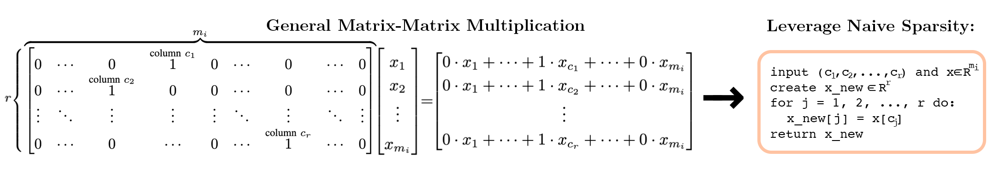
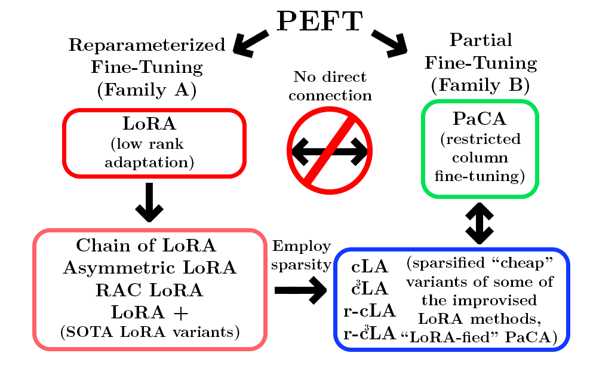
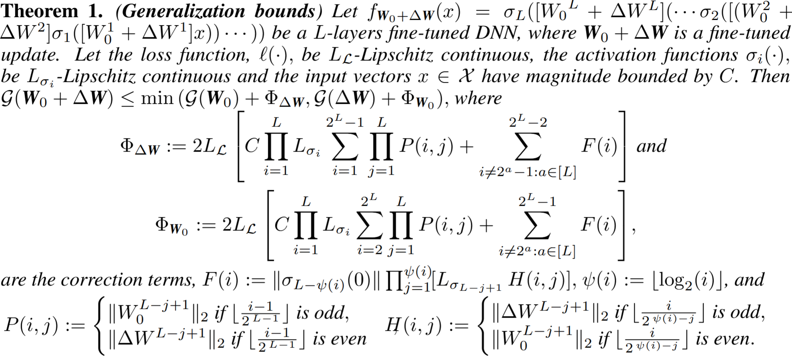
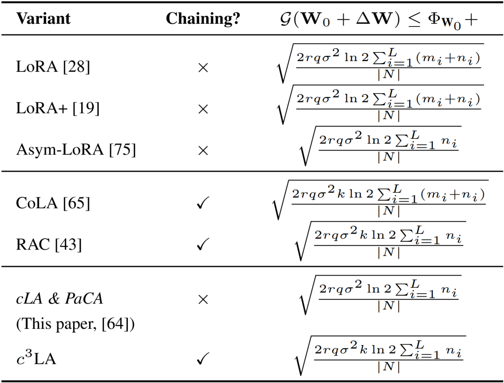
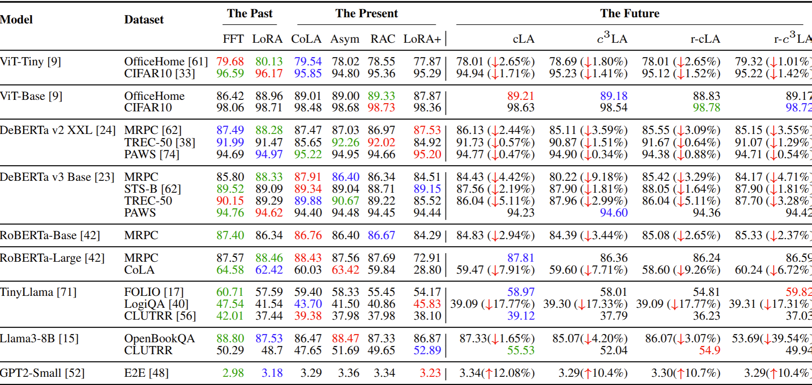
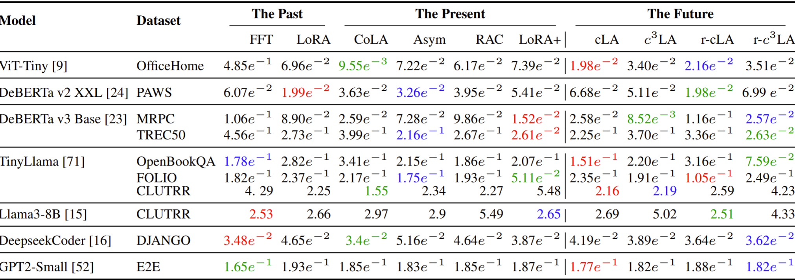
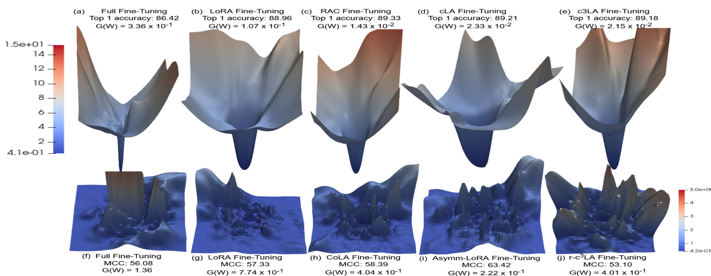
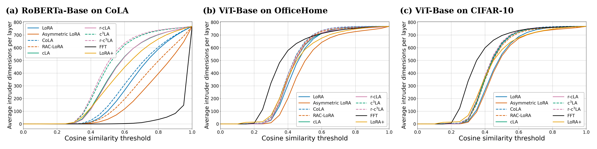

Low-rank adaptation (LoRA) and its variants provide a memory- and compute-efficient alternative to full fine-tuning of pre-trained models. However, questions remain about the comparative generalizability of these approaches and how the structural restrictions on low-rank updates preserve effective adaptation performance. We present a historical framing, covering the past (full fine-tuning and original LoRA), the present (different variants of LoRA), and propose simpler, cheaper, parameter-efficient extensions by inducing sparsity within existing LoRA variants: Cheap LoRA (cLA), training a single low-rank factor with the other fixed (deterministically or, in its randomized variant, stochastically), and the chained circulant variant, c3LA.
We frame cLA as a structured instance of asymmetric LoRA, serving as a controlled column-subspace restriction of full fine-tuning. We derive information-theoretic generalization error bounds for these variants, marking one of the first endeavors in this area. Empirically, we evaluate 11 fine-tuning methods across 10 pre-trained models and 14 datasets, analyzing the fine-tuned models' performance and generalization using tools such as loss landscapes and spectral analysis. Despite the sensitivity of fine-tuned models to the pre-trained model, datasets, and other factors, our study suggests that restricting LoRA-based PEFT methods' adaptation to a sparse, structured column space remains competitive across tasks with their parameter-matched baselines while reducing up to 10% training time and peak GPU memory up to 15%, even with a naïve, non-optimized, sparse implementation. Our theoretical and empirical generalization measures provide a more consistent and principled approach to their cost-effective adaptation than commonly used analytical tools.
Motivation: Parameter Count vs. Parameter Geometry
PEFT methods are often compared by trainable parameter count, but parameter count alone does not explain how an update changes the pretrained model. Two adapters can have nearly identical parameter budgets while occupying very different subspaces of the original weight matrix, producing different performance, robustness, and generalization behavior.
Our central question is therefore geometric: which structured restrictions on low-rank updates preserve useful adaptation, and how far can we restrict the column space before the model stops adapting well? By inducing structured sparsity into LoRA-style updates, cLA and its chained/randomized variants provide a controlled way to study whether the location and structure of the update matters as much as, or more than, the number of trainable parameters while leveraging the sparse structure to save runtime and memory.
Key Contributions
Sparse LoRA Variants
We introduce cLA, random-cLA, c3LA, and random-c3LA as simple, sparse extensions of state of the art LoRA variants. These methods train restricted column-subspace updates by fixing part of the low-rank structure, thereby separating trainable parameter count from update geometry.
Generalization Bounds
We derive information-theoretic generalization bounds for LoRA-family updates. The resulting framework connects rank, chain length, layer dimensions, bitwidth, dataset size, and update support to the generalization behavior of fine-tuned models.
Benchmarking and Evaluation
We benchmark 11 fine-tuning methods across 10 pretrained models and 14 datasets spanning NLP, vision, code generation, and logical reasoning, while measuring accuracy, empirical generalization, loss landscapes, spectral behavior, runtime, throughput, and memory.
Overview of Proposed Sparsity-induced LoRA variants
cLA
Fix A = [Ir | 0] and train only B, restricting adaptation to a deterministic r-column subspace. After merging the cLA adapter update with the base weights, this produces the same model as using PaCA on the first r columns of the base weights.
random-cLA
Randomize the fixed column selector while still training only B, spreading the sparse update over a randomized column restriction. This produces the same end model as applying PaCA to a random r subset of columns of the base weights.
c3LA
Chain cLA modules and shift the identity block by r columns across chains, expanding the covered columns of the pretrained layer. This produces the same end model as applying PaCA to the first r columns of the base weights and periodically shifting the updated columns to the next r throughout training.
random-c3LA
Combine randomized selectors with the chained cLA construction, yielding a randomized sparse chained update. This produces the same end model as applying PaCA to a random r subset of columns of the base weights and periodically resampling that subset without replacement thorughout training.
Algorithms
The pseudocode below sketches the sparse adaptation mechanisms used by the proposed variants.
cLA
Given pretrained layer W0 ∈ R^{n×m}
Choose rank r and scale α
Set A = [ I_r | 0_{r×(m-r)} ]
Initialize B = 0_{n×r}
For each training step:
Compute loss L using W = W0 + (α/r) · B · A
Update B ← B − η · ∇_B L
Return adapted layer W
c3LA
Given pretrained layer W0 ∈ R^{n×m}
Choose rank r, chain length k, scale α
For j = 1..k:
Define A_j as a shifted selector
A_1 = [ I_r | 0 | 0 | ... ]
A_2 = [ 0 | I_r | 0 | ... ]
...
Initialize B_j = 0_{n×r}
For j = 1..k:
For each training step:
Compute loss L using
W = W0 + Σ_{t=1..j} (α/r) · B_t · A_t
Update B_j ← B_j − η · ∇_{B_j} L
Return adapted layer W
random-cLA
Given pretrained layer W0 ∈ R^{n×m}
Choose rank r and scale α
Sample a fixed randomized selector A
Initialize B = 0_{n×r}
For each training step:
Compute loss L using W = W0 + (α/r) · B · A
Update B ← B − η · ∇_B L
Return adapted layer W
random-c3LA
Given pretrained layer W0 ∈ R^{n×m}
Choose rank r, chain length k, scale α
For j = 1..k:
Sample a fixed randomized selector without replacement A_j from the shifted selectors of c^{3}LA
Initialize B_j = 0_{n×r}
For j = 1..k:
For each training step:
Compute loss L using
W = W0 + Σ_{t=1..j} (α/r) · B_t · A_t
Update B_j ← B_j − η · ∇_{B_j} L
Return adapted layer W
Naïve sparse implementation
The sparse construction can be implemented without multiplying by the full fixed selector. For cLA and random-cLA, the selector A simply chooses r coordinates of the input. Instead of computing A(x) as a dense matrix multiplication, the implementation stores the selected column indices and directly gathers [xc1, …, xcr]. This avoids unnecessary selector FLOPs and helps explain the observed runtime and memory reductions.

Sparse LoRA variants can exploit the fact that the fixed selector only gathers a small set of input columns.
Bridge to PaCA
Partial Connection Adaptation (PaCA) was motivated from a systems perspective: it reduces activation memory by only training a subset of the columns of each original layers' weights. Our sparse LoRA variants provide a theoretical bridge between PaCA and LoRA; when PaCA fine-tunes the first r columns of the pretrained layer, it updates the same parameters as cLA, thus PaCA can be reframed theoretically as a LoRA style update using cLA with a corresponding selector matrix A, allowing us to apply theoretical results from LoRA to PaCA. This does not imply that PaCA is strictly better than the cLA variants, since there are many benefits of the LoRA structure (being able to switch between multiple tasks easily, for example) that PaCA does not retain.

Sparsity-induced LoRA variants connect reparameterized fine-tuning and partial fine-tuning.
Theoretical Generalization Bounds of LoRA variants
Theorem 1 is a general bound for an arbitrary fully connected L-layer neural network. It upper bounds the generalization error of the fine-tuned model W0 + ΔW using the generalization behavior of either the pretrained backbone or the update. This makes it a reusable template: once a PEFT method specifies the structure of ΔW, the theorem can comment on its generalizability.
The standalone correction terms ΦΔW and ΦW0 collect the Lipschitz constants of the loss and activations, layerwise spectral norms of the base and update weights, and zero-activation offset terms from recursively collapsing the difference between the fine-tuned and pretrained networks.

Intuition. The theorem converts the problem of comparing PEFT updates into a spectral and information-theoretic control problem. Each layer contributes either base-model spectral magnitude or update spectral magnitude, and the LoRA-family table is obtained by plugging in the number and structure of trainable update parameters.
Extension to transformer architectures. Theorem 1 applies to any architecture that can be written as a composition of linear maps and
Lipschitz maps, under bounded input. We therefore view transformer blocks as fitting the theorem. For the specifics on adapting Theorem 1 to the attention mechanism, see our paper's appendix section D.1.5.
With the additional assumption that the loss function ℓ(·) is
σ-sub-Gaussian, we obtain upper bounds for the LoRA variants
studied in this paper and for PaCA. The table below summarizes these bounds. For the derivation of each
variant-specific bound, see Appendix D.1.6 of the paper.

mi: input dimension of layer i
ni: output dimension of layer i
r: adapter rank
k: chain length
q: bitwidth of the stored weights
σ: sub-Gaussian parameter of the loss in the mutual-information bound
|N|: fine-tuning dataset size
Benchmarking and Evaluation
The full empirical comparison reports performance and generalization over 11 fine-tuning methods. For CoLA we report the Matthews correlation coefficient (higher is better); for GPT2-small, perplexity (lower is better); and for the remaining datasets, accuracy. We use green, red, and
blue to indicate the best, second best, and third best result.
For the sparse variants, ↓ indicates the accuracy drop percentage
compared to the best.

Performance of fine-tuned models across the past, present, and future PEFT methods.
Key takeaways. No single method substantially outperforms the others for adapting
the model to their downstream tasks, including FFT. The sparsity-induced SOTA LoRA variants outperform FFT and
LoRA in some tasks by a large margin and in many cases their performance drop is modest. This suggests
that when fine-tuning a model for a downstream task, it may be optimal to select a fine-tuning
method based on its other characteristics and user-specific needs, rather than just the generated
accuracy. Although the sparse variants do not reduce the number of trainable parameters compared to their non-sparse LoRA
counterparts, they reduce training time by 5-10% and peak GPU memory by 5-15%, with a naïve,
non-optimized, sparse implementation.

Empirical generalization error, 𝒢(W), of the fine-tuning methods over various models and datasets. Lower values are better. These values are approximations for how far off the loss of the model obtained on the training set will match the loss of the model on its entire input space (thus its loss in training will better match its loss on any sufficiently large dataset observed in a production environment).
Key takeaways.
Drawing a connection from our theoretical upper bounds in our LoRA Table in the theoretical section above, we find PEFT methods with the
same upper bounds perform similarly in practice. More precisely, cLA has a smaller upper bound on
𝒢(W) than r-c3LA in practice matching the theory. This observation
also holds for cLA and RAC, and c3LA and Asymmetric LoRA pairs. On the other hand, cLA and
r-cLA have the same upper bound on 𝒢(W), and they also perform almost similarly in practice. Nevertheless, there are some discrepancies, and we attribute them to the fact that Table 1 gives us
an upper bound on 𝒢(W).
Other Generalization Diagnostic Tools: Loss Landscapes
To expand on why the theoretical bounds are valuable, we introduce two alternative methods of analyzing the generalizability of the fine-tuned models: loss landscapes and intruder dimensions. We show that, while there are valuable insights and consistencies among them, their ability to predict which of the fine-tuned methods generalize the best is less consistent than using our theoretical bounds.
3D-loss landscapes visualize how a model’s empirical loss differs under small parameter per-
turbations. A sharper loss landscape indicates worse generalization, smoother
landscapes indicate the PEFT method is more robust to initialization. For more details, refer to our paper's appendix, section E.4.1.
In the below Figure, the top row
shows the loss-landscapes of ViT-Base, pretrained on Imagenet-21K, and fine-tuned on OfficeHome,
while the bottom row shows the loss-landscapes of RoBERTa-Base, pretrained on a large corpus of
English data and fine-tuned on CoLA.

Loss landscapes of ViT-Base fine-tuned on OfficeHome (top row) with PCA directions, and RoBERTa-Base fine-tuned on CoLA (bottom row) with random directions.
Key takeaway.
The loss-landscape heuristic does not consistently align with empirical generalization in our experiments. Chain methods such as RAC-LoRA, CoLA, and c3LA often produce sharper landscapes than their non-chain counterparts, which would normally suggest worse generalization. However, this is not always what we observe empirically. This discrepancy between practice and theory is consistent across video
and text model modalities.
Other Generalization Diagnostic Tools: Intruder Dimensions
compares the performance between the fine-tuned models of LoRA
and FFT. Given the pretrained and fine-tuned models, W0 and W0 + ΔW, the number of intruder
dimensions correlates with their performance on the pretraining task. We ask: Will forgetting less of the more diverse dataset indicate
better generalizability?
In the below Figure, we present the number of intruder dimensions
present in FFT and various LoRA-based PEFT methods for RoBERTa-Base fine-tuned on CoLA and
ViT-Base fine-tuned on OfficeHome and CIFAR-10 over varying threshold ranges, ε ∈ (0, 1].

Average number of intruder dimensions present in different fine-tuned models at the end of training. The panels compare RoBERTa-Base fine-tuned on CoLA, ViT-Base fine-tuned on OfficeHome, and ViT-Base fine-tuned on CIFAR-10 over varying cosine similarity thresholds ε ∈ (0, 1].
Key takeaway.
The chain variant of any LoRA PEFT method produces more intruders than its
non-chain counterpart; see LoRA compared to CoLA, Asymmetric LoRA to RAC, cLA to c3LA in
the above Figure. This correlates with our loss landscapes, where chain variants produce sharper landscapes.
However, the expected worse generalizability of these chain methods is not observed empirically.
Closing Takeaways
PEFT performance is task-dependent: no single fine-tuning method dominates across all models and datasets.
Our proposed sparse extensions of SOTA LoRA
variants perform well across multiple modalities and models while substantially reducing training
time and memory requirements
From a theoretical perspective, our sparsity-induced variants serve
as a bridge between LoRA and PaCA, two different families of PEFT methods. While these sparse
variants may require larger budgets to maintain robustness in certain settings, they remain overall effective, highlighting the importance of selecting fine-
tuning methods based on task characteristics and user constraints
We show that, in theory,
the sparse methods have the same generalization error upper bounds as their non-sparse counterparts,
and closely track the empirical generalization trend across most models and modalities. This insight
provides a more consistent and guided pathway for selecting PEFT methods, complementing existing
diagnostic tools such as loss-landscape and intruder-dimension analyses.
Citation
@article{beyondlora,
title={Beyond LoRA: Is Sparsity-Induced Adaptation Better?},
author={Cadenhead, Elijah and McGee, Cristian and Li, Xin and Bergou, El Houcine and Dutta, Aritra},
journal={arXiv preprint arXiv:2606.13767},
year={2026}
}